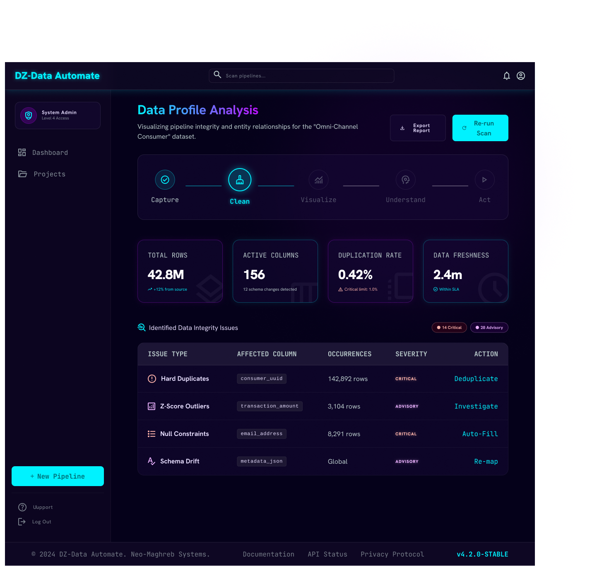
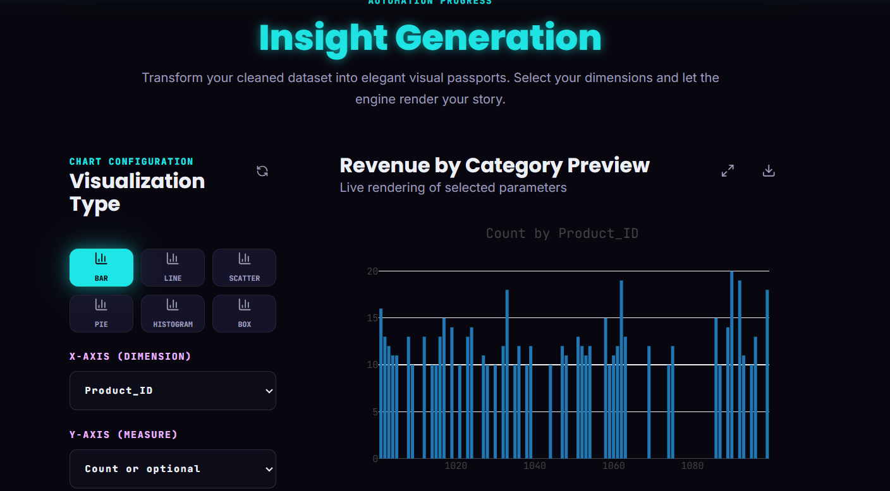
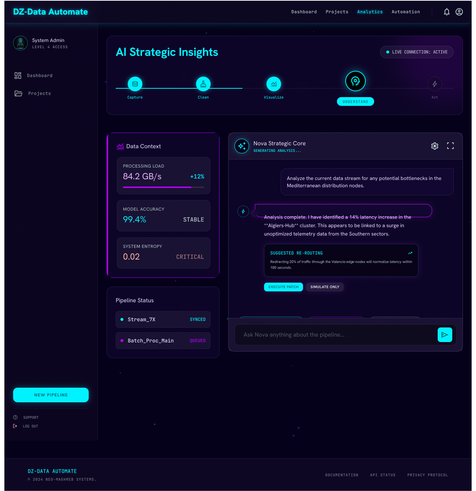

DzDataAutomate
"Data Science Automation, made for everyone"
Founding Team
Benoudjit Lyne — ML Pipeline & Docs
Chikhi Mey Aya — Backend & AI Integration
Djouzi Nour El Houda — Frontend & UX
Supervisors
Dr. Benslimane Salim (ESTIN)
Dr. Amara Karima (ESTIN)
Academic Year: 2025/2026
- Welcome the members of the jury. Introduce the project name: DzDataAutomate.
- State our tagline: "Data Science Automation, made for everyone".
- Briefly introduce the team and our supervisor structure, framed under Ministerial Order 1275 (diplôme-startup).
- Transition: Let's start with the core observation that motivated this work.
Data is Everywhere,
Accessibility is Not
Algerian businesses, students, and NGOs collect data every single day — but almost none of them can extract value from it.
The Paradox
They possess the raw information assets, but lack the technical tools or consulting budget to interpret them.
The "Complexity Wall" separating business operators from data solutions.
- Start with a story hook: "Algerian businesses, students, and NGOs collect data every day — but almost none of them can use it."
- Contrast three personas:
- The boutique owner in Algiers tracking inventory on Excel.
- The NGO officer in Batna analyzing regional survey responses.
- The master's student trying to run statistical correlations.
- They face a "complexity wall": either learn coding/data science, pay expensive consultants, or let data sit idle.
- Transition to the project idea.
DzDataAutomate
An intelligent web platform automating the full data science workflow. No installation, zero code, no setup. Users state their goals in plain business language, upload their files, and obtain actionable reports and reproducible code.
- Introduce DzDataAutomate as the solution: an intelligent web platform.
- No installation, no coding, no configurations needed.
- Walk through the 5-stage pipeline: Ingest -> Clean -> Visualize -> AI Suggestions -> Export.
- Emphasize the open-source backing: Python, Pandas, Scikit-learn, Plotly. It guarantees speed and transparency.
Core Value Propositions
1. Accessible &
Affordable
2. Fast &
Reliable
3. Private &
User-Centered
- Instead of listing all 9 values individually, group them into 3 thematic clusters for the jury:
- Accessible & Affordable: Targeting students and small retail operators who have zero budget.
- Fast & Reliable: Underpinned by high-performance Python pipelines and risk mitigation.
- Private & User-Centered: Adapting specifically to local market data constraints.
Organizational Roadmap
Founding Responsibilities
Backend architecture, cleaning algorithms, and AI integration.
Frontend interface layouts, responsive styles, and navigation flows.
ML integration, validation tests, and quality pipeline documentation.
Objectives Timeline
Project scheduled across a 10-month prototype-to-thesis delivery timeline (Table 1).
- Introduce roles briefly: Mey Aya on backend algorithms, Nour El Houda on UI design/experience, Lyne on ML integration and pipeline documentation.
- Highlight the milestones:
- Year 1: Deploy prototype, secure 100 active academic/incubator pilot users.
- Year 3: 500 paying SME clients, 3 active university integrations.
- Year 5: Capture 15% of the Algerian SME analytics segment and target expansion to Morocco and Tunisia.
Where Lies the Innovation?
"Not a new ML algorithm — a new way of delivering data science."
New Process
Automating the entire 4-stage pipeline (exploratory, clean, model selection, visualization) in minutes instead of days of custom data-scientist scripts.
New Functionality
Intent-driven suggestion cards generated by local LLMs based on business sector rather than prompting users for complex SQL or parameter inputs.
New Customers
Reaching the non-technical majority (retailers, students, local NGOs) systematically excluded by enterprise software pricing and steep learning curves.
New Offer
Privacy-preserving, offline-compatible architecture. Data profile analysis is executed locally; raw records never leave the organizational perimeter.
- Clarify right away: We did not write a new statistical algorithm. The innovation is in architectural delivery.
- Go through the 2x2 grid:
- New Process: Automated pipeline.
- New Functionality: Intent-driven suggestion cards.
- New Customers: Serving the non-technical majority in Algeria.
- New Offer: Privacy-preserving offline configuration using local LLMs.
Intent-Driven AI Analysis
Instead of expecting users to formulate complex queries or write code, DzDataAutomate asks 2 simple questions (Data Type + Business Goal) and generates contextually relevant cards to click.
Requires code interpretation & data profiling knowledge:
import pandas as pd
df = pd.read_csv("sales.csv")
df.dropna(subset=["revenue"], inplace=True)
correlation = df["promo"].corr(df["revenue"])
# How to plot this? What parameters?
# What if dates are messy?
Result: High friction. Non-technical users abandon the task.
User states context: "Retail" + "Identify Growth".
Platform proposes clickable action cards:
Result: Local LLM (via Ollama) maps metadata to pre-built scikit-learn models. No data leaks.
- This is our most distinctive slide. Explain the inversion of user experience.
- In traditional systems, the user must write scripts or configure chart parameters.
- With DzDataAutomate, the system scans structural characteristics and proposes clickable cards mapped to execution paths.
- Technical point: Local LLM executes on the client container using Ollama; raw data stays local. Falling back gracefully to heuristics if AI goes offline.
Competitive Landscape
International AutoML tools occupy the high-power/high-technicality segment. General visual tools lack predictive strength. DzDataAutomate bridges the accessibility gap.
DzDataAutomate target positioning: high accessibility combined with full predictive pipeline power.
- Direct the jury to Figure 2 (the competitive positioning map). It's a key slide showing our strategic positioning.
- Highlight that international giants like Google Vertex AI and DataRobot are far too complex and cloud-centric.
- Power BI is great for visualization but lacks out-of-the-box ML without Azure integrations.
- DzDataAutomate is uniquely positioned in the High Access / High Power quadrant for Algerian SMEs.
Strategic Market Gaps
Gap 1: AutoML + Simplified UI
No platform combines advanced scikit-learn AutoML with a zero-code interface tailored for localized language use.
Gap 2: Sovereign Local AI
All modern visual LLM wrappers stream user files to foreign servers. DzDataAutomate runs AI models fully locally via Ollama.
Gap 3: Prohibitive Enterprise Costs
Licensing costs for enterprise data science tools completely shut out local SMEs. DzDataAutomate delivers freemium access.
| Criterion | Competitors | DzDataAutomate |
|---|---|---|
| Non-technical accessibility | Low — Medium | High (No code) |
| Natural language interaction | Partial / None | Full (Local LLM) |
| Internet dependency | Required (Cloud) | None (Core pipeline) |
| Sovereign data privacy | Moderate / Low | High (Local run) |
| Subscription cost | High — Extreme | Low (500 DZD/mo) |
| Algerian market adaptation | None | High (Local integration) |
- Present Table 2 in a highly readable format. Highlight that the proposed platform has high adaptation to the local context.
- Outline the three major market gaps:
- The lack of AutoML combined with a simplified UI.
- The lack of data sovereignty options.
- Cost structures that exclude the local economic fabric.
Service Delivery Architecture
Step-by-step description of how the system processes data. Designed to run automatically while providing step-by-step control mechanisms.
1. Capture & Upload
Intent profiles capture domain context (Sales, HR, etc.). User uploads CSV/Excel. Instant metadata scanning builds a structural "Data Passport".
2. Clean & Preprocess
Duplicates are dropped. Missing values are filled (median/mode). Outliers are flagged. Standardized dates. Raw tables cleaned under automatic or guided mode.
3. Intelligent Suggestion
Non-sensitive metadata profiles (column stats, types) are sent to a local LLM. The AI generates context-specific suggestion cards (e.g. sales trends).
- Walk through the service delivery architecture (Figure 3 in the memoire).
- Explain that users upload a dataset, which goes through deterministic cleaning (duplicates, missing value imputation, dates).
- Point out the privacy seal: Raw data never leaves the user's device; only metadata profiles are sent to the local LLM.
- Transition to infrastructure and key partners.
Technical Architecture & Partners
Zero-cost hosting during the prototype phase allows high-margin operations. Built on robust local and international networks.
Supply & Stack
Frontend framework (Hosted on Vercel Free Tier)
ML core API (Hosted on Render Free Tier)
Local LLM container processing metadata
Algerian gateway for CIB & Dahabia card payments
Strategic Partners
Provides institutional framework, physical workspaces, and direct access to early student tester pools.
Beta testers providing real-world datasets in exchange for priority access and case studies.
- Present the technology stack: React for UI hosted on Vercel, FastAPI backend on Render, Ollama for local LLM suggestions, and Chargily for payment processing.
- Highlight that we utilize free tiers and open-source models to keep server overhead at $0 during the prototype phase.
- Partnerships: CNESIIU / university incubator structure gives us structural validation and target student users; local SMEs provide real-world testing data.
Prototype Walkthrough
Stage 1 — Sign-up & Domain Selection
Intent captured at registration: 8 professional sector cards. The platform personalises every subsequent step based on this selection.
Stage 2 — Dashboard & Upload
Trust signals (encryption, compliance, API) are placed at the point of maximum hesitation, addressing data-sovereignty concerns.


- Slide 14: Screens 1 & 2 — Sign-up and Dashboard.
- The domain selection at registration is central to our UX innovation: intent is captured before any data is uploaded.
Prototype Walkthrough
Stage 3 — Data Preview
Silent scan renders a Data Passport: row count, column types, missing-value distribution, building confidence before processing.
Stage 4 — Data Cleaning
The cleaning report surfaces integrity issues in plain language with one-click corrective actions (duplicates, nulls, date-formats).


- Slide 15: Screens 3 & 4 — Data Passport and Cleaning Report.
- Cleaning report: issues are expressed in business language, not technical jargon.
Prototype Walkthrough
Live Plotly Configurator
Cleaned column names map to x/y selectors. System suggests chart drill-downs.
Nova Strategic Core
Local LLM provides strategic summaries. Includes natural-language follow-up question box.


- Slide 16: Screens 5 & 6 — Visualization and AI Strategic Insights.
- The Ollama panel processes metadata locally; raw data never leaves the device.
Year 1 Cost Structure
The platform benefits from an extremely low initial operational footprint. Over 50% of the Year 1 budget goes into outreach and university workshops.
Financed entirely via university incubator support & cloud startup credits.
- Direct attention to Slide 12 (Year 1 Budget). The total estimated budget is 104,000 DZD (Table 3).
- Highlight that we operate with a low capital requirement. No salaries or licensing costs are factored in during development.
- Server costs (30K DZD post-launch) and marketing/workshops (30K DZD + 10K DZD) constitute the largest components.
- Transition to revenue models and path to profitability.
Profitability Projections
Our revenue relies on a freemium SaaS model (Free tier for basic tasks, 500 DZD/month subscription for full predictive outputs + PDF export).
5-Year Subscription Growth Trajectory
Projections based on the 5-year financial planning curves (Table 4 & 5).
- Discuss the freemium model. Paid subscription is 500 DZD per month.
- Highlight subscription projections:
- Optimistic (solid green): year N starts at 600, growing to 16.8k by year N+5.
- Pessimistic (dashed red): starts at 180, reaching 7.2k by year N+5.
- Under both scenarios, unit economics are extremely positive. Marginal cost per user is near-zero.
- BFR (Working capital) is near 0 DZD. Subscriptions are paid upfront.
- Transition to the prototype walkthrough.
Prototype Walkthrough
Insights & Actions — the final stage of the pipeline. The session dashboard consolidates the full output: cleaned data, executive report, AI findings, and a reproducible Python notebook.

- Slide 17: Screen 7 — Session Results & Export Dashboard.
- This slide closes the prototype walkthrough section. Transition to the conclusion.
Democratizing Data Science
across the Algerian Market
"To establish a locally developed platform as the reference solution for data-driven decision-making in Algeria and the broader North African region."
- Recap the three foundations of our defense:
- Technically sound: Core pipeline tested and verified.
- Strategically defensible: Resolving key domestic blockers.
- Financially viable: Breakeven in year 1.
- Highlight future directions: integration of clustering/time-series, Arabic-language localization.
- Close the defense: "Thank you for your attention. We are ready to take your questions."